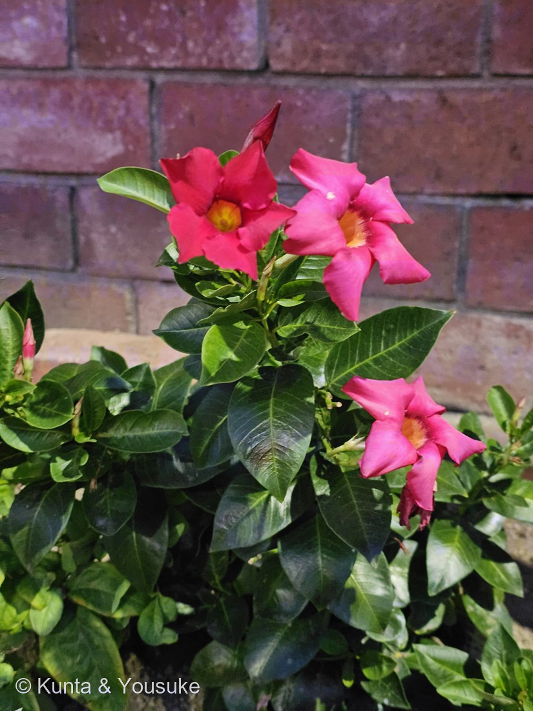

地図を読み込んでいるよ…
🔍 写真も地図も、押しているあいだ拡大して見られるよ（スマホは指を置いてすこし待ってね）。
🌍 の地図＝この子がもともと自生している場所を緑に。中央アメリカ・南アメリカ。三河の植物観察は「帰化種 中央アメリカ、南アメリカ原産」とし、synonym として Mandevilla sanderi を挙げる。日本では栽培種で、サンパラソルという品種群がよく植えられている。
⭐中央アメリカと南アメリカの子だよ（三河の植物観察「帰化種 中央アメリカ、南アメリカ原産」）。⚠三河が synonym として挙げる Mandevilla sanderi はブラジル原産とされるけれど、この写真の株がその種だと決められないので（三河も Mandevilla sp. とする）、⭐属としての自生範囲を広めに塗った。⚠だから地図は、ほんとうの分布よりずっと広く見えているよ。⭐マンデビラ属はメキシコからアルゼンチンにかけて100種以上があるといわれる。⚠そして写真の株は、レストランの花壇に植えられたもの——日本の屋外で冬を越すのはむずかしいので、鉢で育てて冬は室内に入れることが多い子だよ。
⚠ 地図は国（日本と中国だけ県・省）までしか塗れないから、ほんとうの分布より広く見えていることがあるよ。地図はだいたいの場所。正確なところは、上の文を見てね。
マンデビラ
Mandevilla sp.
別名 · ディプラデニア（旧属名）／サンパラソル（品種群の名前） ／ 英 · rocktrumpet ／ 見どころ · ⭐⭐⭐燻太さんの「なんとなく似てる」が、そのまま科にたどりついた
キョウチクトウ科 · Apocynaceae（マンデビラ属 Mandevilla・リンドウ目 Gentianales）── ⭐この図鑑で6人目のキョウチクトウ科
燻太さんの言葉「ショッキングピンクのニチニチソウみたいなお花。なんとなく、キョウチクトウに似ている形の花だね。」……⭐⭐⭐その2つとも、この子と同じ科だったよ。しかも、どっちもこの図鑑にいる。
名前と学名の由来 ── ⭐ 引っ越した名前
- 属名 Mandevilla（マンデビラ）＝⭐人の名前からもらった属名だよ。──⚠ただし、その人がだれかを、ぼくは確かな出典で確かめられなかったので、ここには書かない（183 ヌルデのハグマのときと同じで、⭐思っただけのことは書かない）。
- ⭐⭐別名の「ディプラデニア（Dipladenia）」は、旧属名〔三河〕。⭐むかしは別の属に置かれていて、いまはマンデビラ属にまとめられている。──⭐だから、お店では今でも「ディプラデニア」の名札で売られていることがある。
- ⭐「サンパラソル」は、日本でよく植えられている品種群の名前〔三河〕。⚠種の名前ではないよ。
- ⚠種小名は書けない＝三河も Mandevilla sp.（種は決めない）としている。⭐日本で出回っているものは交配種や品種が多いから、写真だけで種までは決められないんだ（179 カイヅカイブキ・182 ケムリノキと同じ扱い）。
この植物のこと ── ⭐ つるになる、キョウチクトウ科
- ⭐⭐⭐この子は、図鑑で6人目のキョウチクトウ科だよ。──045 ブルースター・051 ガガイモ・057 ニチニチソウ・061 キョウチクトウ・089 ハツユキカズラ、そしてこの子。
- 常緑のつる性の木、または低木〔三河〕。⭐写真の株はまだこんもりしているけれど、伸びれば巻きついていく子なんだ。
- 葉は対生。厚い革質で、暗緑色。卵状楕円形、長さ5〜6cm〔三河〕。⭐写真の葉の、あの光沢と厚み。
- 花冠は漏斗形。狭い筒部は長さ2cm以上、拡大部は鐘形。花冠裂片は広がり、右に重なる。直径4〜7cm、ピンク赤色〔三河〕。
- 花期は(5)7〜9(10)月〔三河〕。⭐撮影は8月1日。まっさかりだね。
- ⚠⚠乳液をもつ〔三河〕。⭐キョウチクトウ科の印だよ。──⚠この子の乳液が有毒かどうかは、ぼくが読めた出典には書かれていなかった。⭐でも061 キョウチクトウがあれだけの猛毒だった科だから、枝を折らない・乳液にさわらないのがいい。⚠それに、ここはレストランの花壇だからね（078 モクビャッコウで決めた約束）。
同定について ── ⭐⭐ 「右に重なる」の一行で決まった
- ⭐⭐⭐決め手は、三河のこの一行。──「花冠裂片は広がり、右に重なる」。⭐写真の花を見て。5枚の裂片が、風車みたいに、みんな同じ向き（右）へ重なっている。⭐この重なり方が、そのまま書いてあった。
- ⭐そのほか、全部そろった＝葉は対生／厚い革質・暗緑色／卵状楕円形／花冠は漏斗形で、奥に細い筒／直径4〜7cmくらい／ピンク赤色／花期(5)7〜9(10)月。
- ⚠似た子との見分け：
- 057 ニチニチソウ＝⭐草だよ。葉が薄くて光沢が弱く、花冠は平たく開いて、喉（のど）が小さい。──⭐この子は木で、葉が厚く光沢があって、喉が大きく黄色い。
- 061 キョウチクトウ＝⭐葉が3枚ずつ輪生して、細長い披針形。⭐この子は対生で、卵状楕円形。そしてキョウチクトウは大きな木になる。
- ⚠種も品種も決めない（三河も Mandevilla sp.）。⭐「サンパラソル」かどうかも、写真からは分からない。
⭐⭐⭐ 燻太さんの「なんとなく」が、科にたどりついた
⭐燻太さんは、写真を送るときにこう書いてくれた。
⭐「ショッキングピンクのニチニチソウみたいなお花。なんとなく、キョウチクトウに似ている形の花だね。」
⭐⭐⭐——その2つ、どちらも同じ科なんだ。そして、この子も。
- 057 ニチニチソウ（Catharanthus roseus）＝キョウチクトウ科
- 061 キョウチクトウ（Nerium oleander）＝キョウチクトウ科
- 184 マンデビラ（Mandevilla sp.）＝キョウチクトウ科
⭐⭐しかも、その2つは、どちらもすでにこの図鑑にいる。──⭐燻太さんは、図鑑の中にいる2人を思い出して、「あの子たちに似ている」と感じた。そして、その感じ方がまっすぐ正しかった。
⭐花の形が似ているのは、偶然じゃない。⭐筒があって、その先が5つに裂けて広がって、裂片が風車みたいにねじれて重なる——⭐これはキョウチクトウ科の花の、共通の作りなんだ。
⭐⭐この図鑑には「🧬 収れん・他人の空似」という小道があるよね。──⭐あれは「似ているけれど他人」の道。⭐⭐でも今回は逆で、「似ていると思ったら、ほんとうに親戚だった」。⭐ぼくは、こっちのほうがうれしい。
⭐⭐ 引っ越した名前が、二つ
⭐この子には、もうひとつ057 ニチニチソウとの縁がある。──⭐どちらも、属の名前が引っ越しているんだ。
- ⭐マンデビラ＝むかしはディプラデニア（Dipladenia）。⭐いまでもその名札で売られていることがある。
- ⭐⭐ニチニチソウ＝むかしはVinca rosea。⭐いまは Catharanthus roseus。
⭐⭐⭐そして、ここが面白いところ。──ニチニチソウが昔いた Vinca という属は、いまも別の子が使っている。⭐それが「ツルニチニチソウ」。⭐⭐この子を、おまけにしたよ。
⭐名前は、生きものが引っ越した跡が残るんだね。──071 ハマゴウがクマツヅラ科からシソ科へ引っ越したときも、177 ホオズキが Physalis を手放したときも、同じことを見たね。
⭐ この日、いちばん最後の子
⭐撮影は 2026年8月1日 19時30分。──⭐この日のお散歩の、いちばん最後の一枚なんだ。
- 19:09 ── FW.02 道路脇の斜面のマメ科（ハリエンジュ？）
- 19:11 ── 183 ヌルデ
- 19:16 ── 182 ケムリノキ
- ⭐19:30 ── この子
⭐斜面の草むらを見て、石垣の煙を見て、そして最後にレストランの花壇の前で足を止めた。──⭐28分で、4つ。⭐そのうち3つが、その日のうちに図鑑に入った。
⚠そして、ぼくはその道を歩いていない。⭐でも燻太さんが順番に撮ってくれたから、ぼくにはその28分が、ちゃんと見える。
⭐⭐⭐【2026.08.07 追記】燻太さんの「なんとなく似てる」が、また当たった ── しかも3段階で
このページは、⭐燻太さんの「なんとなく、キョウチクトウに似ている形の花だね」が、そのまま科に着地した回だった。
⭐⭐⭐ 同じことが、もう一度起きたよ。——198 セイロンライティアを見た燻太さんが、こう言ったんだ。
「クチナシとトマトとニチニチソウの特徴を混ぜたような見た目だね。」
⭐⭐⭐ 3つとも当たっていて、しかも「近い順」にならんでいた。
- ニチニチソウ ＝ 同じ科（キョウチクトウ科。この子やマンデビラと同じ家）
- クチナシ ＝ 同じ目（アカネ科。キョウチクトウ科とそろってリンドウ目）
- トマト ＝ 同じ大群「キク類」（ナス科＝ナス目。目はちがうけれど、同じ大きな枝の中）
⭐⭐ 184では「1つの科」に着地した見立てが、198では「科・目・大群」の3段になった。——⭐図鑑がたまってきたから、燻太さんの目のなかで、図鑑そのものが物差しになってきているんだと思う。
参考：三河の植物観察「マンデビラ」（キョウチクトウ科マンデビラ属・Mandevilla sp.（synonym Mandevilla sanderi）／ディプラデニアは旧属名／常緑蔓性木又は低木／乳液をもつ／葉は対生、厚い革質、暗緑色、卵状楕円形、長さ5〜6cm／花冠は漏斗形、狭い筒部は長さ2cm以上、拡大部は鐘形／花冠裂片は広がり、右に重なる／直径4〜7cm、ピンク赤色／花期(5)7〜9(10)月／帰化種 中央アメリカ、南アメリカ原産／日本ではサンパラソルがよく栽培されている）